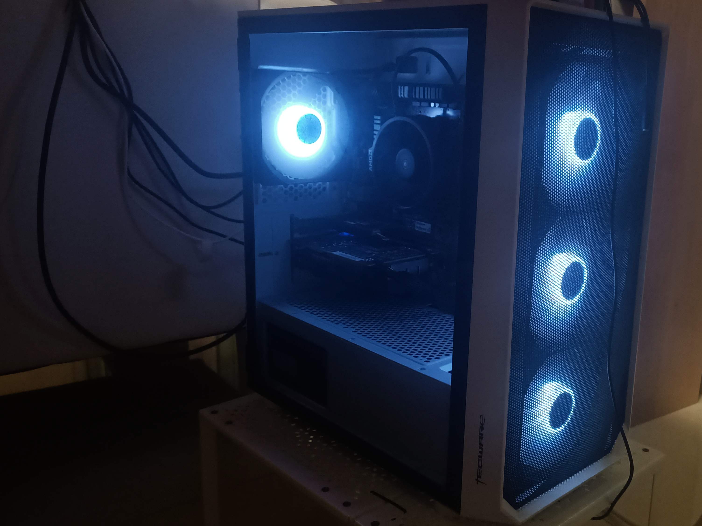
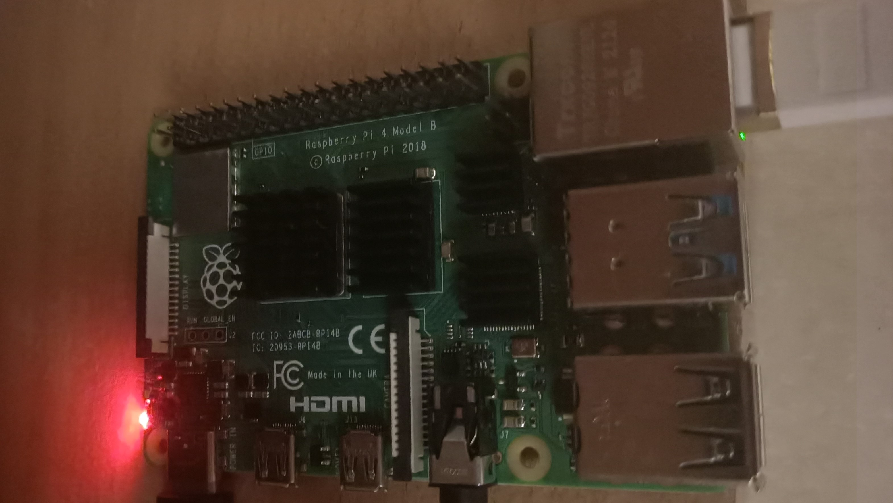

I had my first project in secondary 2 where I built my first computer. At that time I needed a computer for my school projects and I also wanted to try out PC gaming (which later I disliked). This computer had me researching for months and after many PC building tutorials, I went to get my parts and started building it. I was lucky that I bought the parts then when it is cheaper compared to now where pc components are really inflated. The specs of the PC are:
- ryzen 5 3500x
- Asrock B450m
- 16GB (8GBx2) 3200 MZH Corsair Vengeance LPX ram
- 1TB storage
- GTX 1650 super
- 600w Silverstone PSU

This is my home lab or home server. In order to explore more into the world or IT I decided to have a server at home. I understand that a server is just a computer so I bought a second hand computer off Carousell and made it my Server. When I just bought the computer it was running Windows 7. It is extremely slow and laggy so I cleared the disk and installed the ubuntu server on it. Immediately, the computer is usable again. My version on Ubuntu server only has a command line interface. Since I had previously been using the linux command line in CS50, I am not very affected by the difference in user interface on the computer. I access the computer through SSH to keep my place organised. My friend, a NUS graduate, had been helping me understand more about servers, web hosting and networking after I got my server.

This is my raspberry pi 4. I bought it so that I could explore more into computers and their OS without needing to worry about destroying the computer. The raspberry pi’s operating system is loaded on a SD card and the computer will boot from it. I can explore all I want on the raspberry pi and worst comes to worst, can just flash another os on the SD card and start over. Later on I discovered PIVPN and decided to make it a part of my home lab as a VPN for its low power consumption. With a VPN I can access my server practically anywhere that I have an internet connection and also be able to access my local network overseas when travelling.